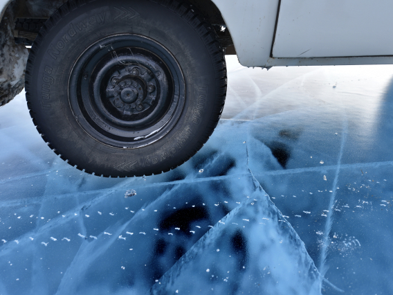
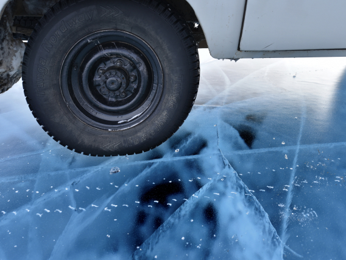

Путешествия по России
Настоящая страна не в выпусках новостей, а здесь.


ваша полка — верхняя
Чего мы там не видели?
- Часовых поясов 11
- Объектов природного наследия ЮНЕСКО 12
- Объектов культурного наследия ЮНЕСКО 16
- Природных заповедников 105
- Аэропортов 241


 
